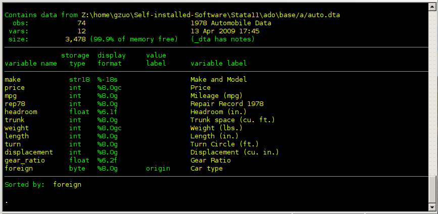
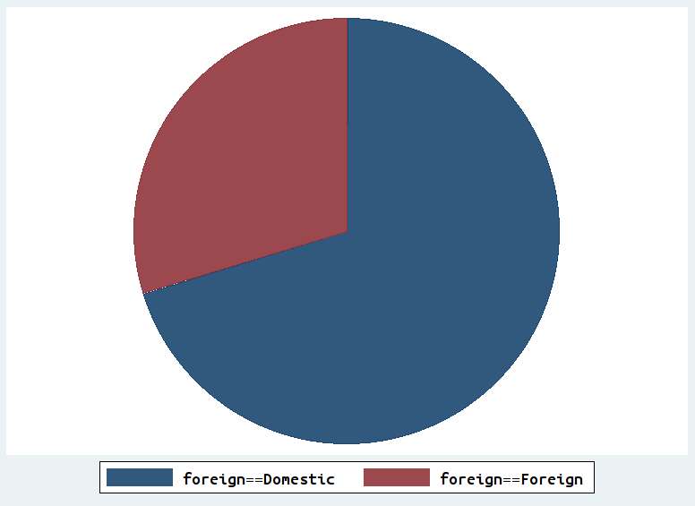
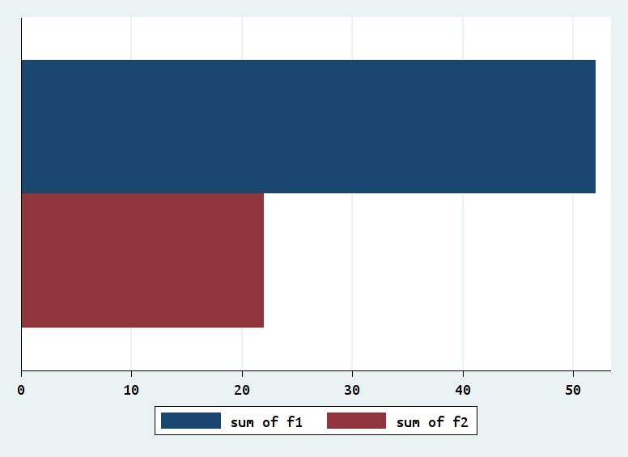
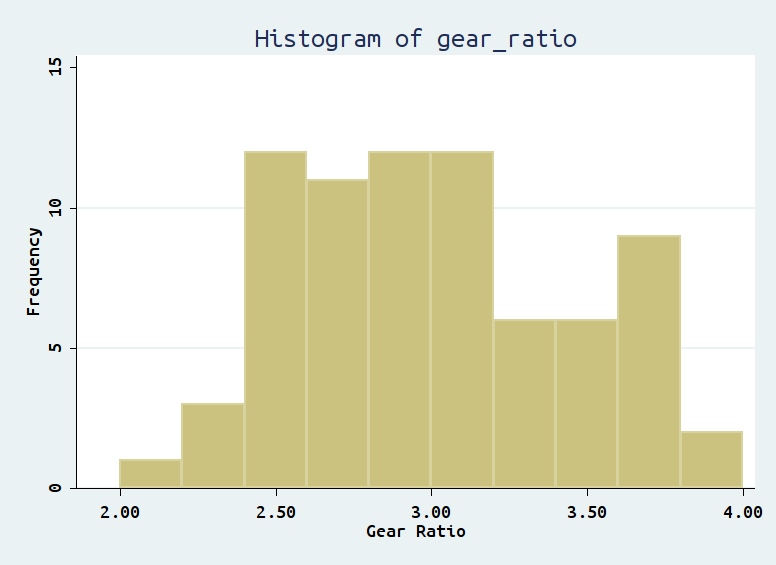

This part shows you the general structure of Stata command, we will start learning Stata by loading Stata-format data (*.dta file) and simply display the data at hand.
The sysuse command can load a specific .dta file provided by Stata itself.
sysuse auto.dta
The edit command can provide an Excel alike view of your data file. And this is how the file auto.dta looks like after invoking edit command.
edit
The describe command shows you basic information about a Stata data file. As you can see, it tells us the number of observations in the file, the number of variables, the names of the variables, and more.
describe
The output from Stata is here
We use the variable “foreign” in auto.dta to demonstrate how to generate pie chart and bar chart for this nominal variable.
In Stata, pie and bar charts are drawn using the sum of the variables specified. Here variable “foreign” contains labeled integers (0 or 1), command tabulate can be used to show counts or frequencies of those integer values. To create pie charts, first run the variable through tabulate to produce a set of indicator variables:
tabulate foreign, generate(f)
graph pie f1 f2
The pie chart is here
Bar chart can also be produced once variable f1 and f2 are generated:
graph hbar (count) f1 f2
The bar chart is here
The tabulate foreign, generate(f) command generates two indicator variables f1 and f2, you may use drop command to delete this two variables so as to get back to our original data set.
drop f1 f2
Histogram can provide the visual display of an interval variable without including all the individual values of this variable. The histogram command can fulfill this task.
histogram gear_ratio, width(.2) start(2.0) frequency title("Histogram of gear_ratio")
The above command is a good example to demonstrate the structure of commands in Stata. The part before comma is the core command, telling Stata what to do. In our case, histogram gear_ratio tells Stata to generate a histogram for the variable “gear_ratio”; the part after comma gives additional options to the core command, telling Stata ways to refine the histogram. The first two options indicate the width of histogram should be .2 and the lower bound of first bin of histogram should be 2. Option “frequency” tells Stata y axis of the histogram should be frequencies, the default value is “density”. Option “title” should be intuitive, asking Stata to add a title to the histogram. In order to familiarize yourself with the way Stata command works, you could add all the above options one by one to see how each of those options change the way histogram looks.
Finally, the output should be shown as follows.
{kind=link}
{kind=link}
{kind=link}
{kind=link}